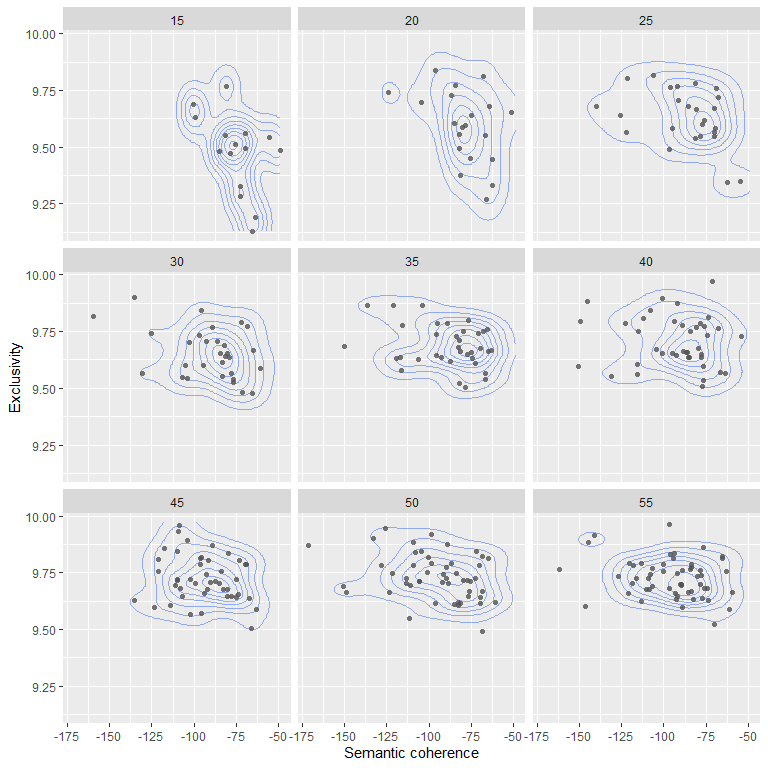

‘K’ — the number of topics
Topic modeling algorithms like stm() are unsupervised
classification methods, but they require one input parameter,
K, which is the number of topics that should be fit to a given
document collection. Choosing a suitable number of topics is one of the
key challenges when fitting a topic model.
There is in fact no correct or best number of topics for a given document corpus. Ultimately, the chosen number of topics defines the level of granularity at which we can explore the topical structure of a document collection. One factor in the choice of K will thus be practical considerations and the questions a topic model should help to answer.
There exist however a number of metrics to assess how well a given
number of topics can explain a document collection (Roberts, Stewart, and
Tingley 2019; Wallach
et al. 2009). The stm() package supports several
of these approaches. For the sample analysis included in the
vignette("covid-preprint-topics") we considered these
measures to determine a suitable K, one that is ideally
producing both a good model fit and deliver a navigable number of topics
for an exploratory analysis.
The stm package offers two approaches to determine a
suitable K, either by letting stm decide the
number of topics or by fitting multiple models with different topic
numbers in parallel and comparing the various measures for goodness of
model fit. Both approaches are discussed below.
Note that the pre-processing options available when preparing the
document corpus for topic modeling will impact the runtime duration of
the algorithm and may also impact the model fit (see
vignette("covid-preprint-topics") for an explanation of
different steps).
Finding the best ‘K’
Let stm determine a suitable topic number
The main stm function offers an option to set K
to 0 which triggers a processing workflow that determines a
suitable number of topics. This option uses an approach described by
(Mimno
and Lee 2014) (it is however not deterministic).
model_K0 <- stm(mydocs_dfm, K = 0)Since this approach is not deterministic, different executions with this setting may result in different topic numbers and different word to topic assignments.
Comparing topic models with different Ks
A more detailed (and resource-intensive approach) is to fit models with multiple options of K, and evaluate the best or most suitable choice based on different measures for goodness of fit. In the following, we will use four metrics — held-out likelihood (Wallach et al. 2009), residual dispersion (Taddy 2012), semantic coherence (Mimno et al. 2011) and exclusivity (Roberts, Stewart, and Tingley 2019) — to assess the quality of topic models with different Ks.
The stm package provides the
searchK()function, which allows to run multiple model fits
with different Ks and then returns the different measures
for model fit. Here we use instead an alternative approach employing the
future and furrr packages1.
Held-out likelihood, requires an evaluation of a topic model
against an unseen data set. We follow the default approach suggested by
(Roberts, Stewart, and
Tingley 2019) and use stm’s
make.heldout method to split the document corpus
(transformed in a document-feature matrix) in a training and a testing
set — models are fit for the training set and held-out likelihood is
then evaluated against the testing set.
library(stm)
# a seed is needed for replicability
heldout_corpus <- make.heldout(mydocs_dfm, seed = 6406852)In preparation of evaluating the models we use stm’s
make.heldout function, which splits a given document corpus
into two parts, a core document set for fitting the model(s) and a
“missing” set that can be used to measure — with the function
eval.heldout — how well the model performs on an unseen
document set.
Fo illustration two subsets of bioRxiv and medRxiv preprints potentially covering the topic “biodiversity” and “sustainability/social-ecological systems” respectively were created. For both subsets, the results of fitting models with K’s ranging from 5 to 100 (in intervals of 5) were evaluated. Depending on the system configuration, fitting those models can take several hours.
For the code section below we assume that we have previously created
a document-feature matrix (pubs_dfm) from a document
set.
library(quanteda)
library(stm)
library(furrr)
library(purrr)
# create a set of Ks to evaluate
K_values <- tibble::tibble(K = seq.int(from = 5, to = 100, by = 5))
# create a heldout corpus for evaluation of model fit
# (a seed can be provided for replicability)
pubs_dfm_heldout <- make.heldout(pubs_dfm, seed = 1234567)
# create document format required by stm
stm_docs <- quanteda::convert(pubs_dfm_heldout, to = "stm")
# consult the futures package for details on parallelization options
plan("multisession")
# fit the STM models with different Ks
# supplying a seed allows replication, but can also be retrieved from the model
models_K5_100 <- K_values %>%
mutate(topic_model = future_map(K, ~stm(documents = stm_docs$documents,
vocab = stm_docs$vocab,
data = stm_docs$meta,
prevalence = ~ server * s(year),
K = .,
verbose = FALSE,
seed = 8912388),
.options = furrr_options(seed = 8912388)))
# extract model fit metrics
metrics_K5_100 <- models_K5_100 %>%
mutate(exclusivity = future_map(topic_model, exclusivity),
semantic_coherence = future_map(topic_model, semanticCoherence,
pubs_dfm_heldout$documents),
eval_heldout = future_map(topic_model, eval.heldout,
pubs_dfm_heldout$missing),
residual = future_map(topic_model, checkResiduals,
pubs_dfm_heldout$documents))
plan("sequential")Now we can explore the results for the four metrics mentioned earlier.

The document completion held-out likelihood (Wallach et al. 2009) and residual dispersion (Taddy 2012) help us to assess how well a topic model explains a given document corpus. Exclusivity (Roberts, Stewart, and Tingley 2019)and semantic coherence (Mimno et al. 2011) can help to assess the quality of the topic assignments and their interpretability.
In order to compute held-out likelihood we created a held-out dataset. The held-out likelihood measures how well a topic model performs on previously unseen documents. There is no specific number that identifies the best K and thus the best topic model, but held-out likelihood allows comparisons between different models, with smaller numbers indicating a better fit. For the evaluated biodiversity preprints subset held-out likelihood peaks at 15 topics and declines quickly for higher Ks, for the SES preprints it peaks at 40 topics but does not show the same large differences for the evaluated Ks.
The residual dispersion can be used as a measure for the unexplained variance in a topic model (Taddy 2012). This measure can again be used to compare different model options. Our evaluation indicates that larger K’s seem to reduce residual overdispersion, but the improvements level off from around 30 topics for both evaluated subsets and increases again for higher Ks.
Semantic coherence measures how frequently the most probable words in a topic co-occur in the modeled documents. The coherence metric appears to align well with expert evaluations of topic quality (Mimno et al. 2011). (Roberts, Stewart, and Tingley 2019) suggest however that semantic coherence can be easily achieved by having a small number of topics dominated by common words. This is in line with the evaluations for both document subsets showing that the average semantic coherence of topics decreases with larger Ks, slower however from around 65 topics, with an intermediate peak at 40 topics.
(Roberts, Stewart, and Tingley 2019) suggest an additional measure: exclusivity. A topic’s exclusivity score considers both the exclusivity and frequency of words in a topic (Roberts, Stewart, and Tingley 2019; Bischof and Airoldi 2012). Simply put, topic models with higher exclusivity scores indicate a better delineation of topics. Large Ks lead to a higher mean exclusivity of topics, but in our example the gains appear to be smaller from around 20 topic. Deciding on a number of topics based on these latter metrics is thus a trade-off between maximizing semantic coherence or exclusivity.
The combined assessment of all four metrics does not suggest a clear winner. For the SES preprints subset we could make a case for topic numbers in the range of 20 to 50 topics. A common approach to arrive at a suitable choice for K is to evaluate topic numbers iteratively, i.e. in the example above it would be potentially helpful to next evaluate all Ks in the range 20 to 50.
It can therefore be helpful to look at the values for exclusivity and semantic coherence for individual topics in a set of models, an approach also suggested by (Roberts, Stewart, and Tingley 2019). The figure below summarizes this approach for the SES preprints subset, showing the combination of exclusivity and semantic coherence for each topic in topic models with Ks ranging from 15 to 55.

This exploration at the level of individual topics illustrates again that exclusivity improves at the expense of semantic coherence. Again, we cannot identify a ‘clear winner’, but Ks in the range 30 to 45 might be a reasonable choices for a sample analysis — there are no large gains in topic exclusivity beyond 30 topics, but more topics show distinctly lower semantic coherence beyond 45 topics. Ultimately, this approach can help to identify a suitable range of Ks, but the choice should also be informed by the explored research questions, practical considerations and ideally domain knowledge about the analysed documents.